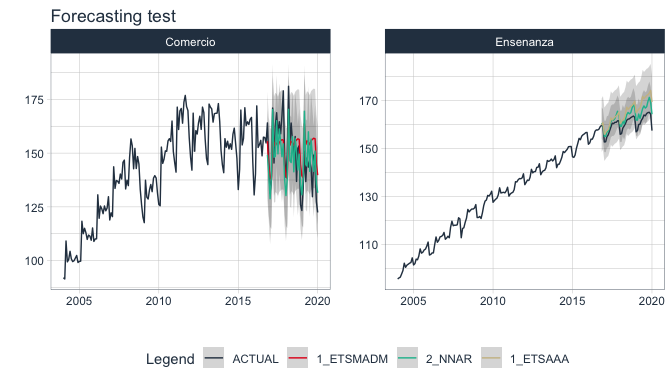
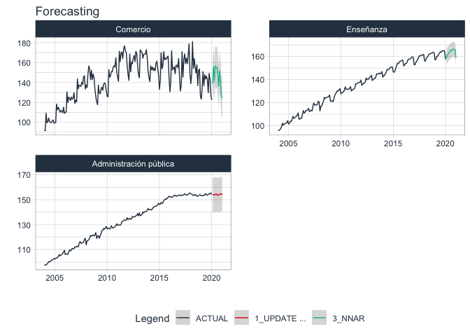

Serves primarily as an extension to the modeltime 📦 ecosystem. In addition to some functionalities of spatial data and visualization.
Installation
Not on CRAN yet.
#install.packages("sknifedatar")Or install the development version from GitHub with:
# install.packages("devtools")
devtools::install_github("rafzamb/sknifedatar")Usage

Data
data("emae_series")
nested_serie = emae_series %>% filter(date < '2020-02-01') %>% nest(nested_column=-sector)
nested_serie
#> # A tibble: 16 x 2
#> sector nested_column
#> <chr> <list>
#> 1 Comercio <tibble [193 × 2]>
#> 2 Ensenanza <tibble [193 × 2]>
#> 3 Administracion publica <tibble [193 × 2]>
#> 4 Transporte y comunicaciones <tibble [193 × 2]>
#> 5 Servicios sociales/Salud <tibble [193 × 2]>
#> 6 Impuestos netos <tibble [193 × 2]>
#> 7 Sector financiero <tibble [193 × 2]>
#> 8 Mineria <tibble [193 × 2]>
#> 9 Agro/Ganaderia/Caza/Silvicultura <tibble [193 × 2]>
#> 10 Electricidad/Gas/Agua <tibble [193 × 2]>
#> 11 Hoteles/Restaurantes <tibble [193 × 2]>
#> 12 Inmobiliarias <tibble [193 × 2]>
#> 13 Otras actividades <tibble [193 × 2]>
#> 14 Pesca <tibble [193 × 2]>
#> 15 Industria manufacturera <tibble [193 × 2]>
#> 16 Construccion <tibble [193 × 2]>Models
m_auto_arima <- arima_reg() %>% set_engine('auto_arima')
m_stlm_arima <- seasonal_reg() %>%
set_engine("stlm_arima")
m_nnetar <- workflow() %>%
add_recipe(recipe_1) %>%
add_model(nnetar_reg() %>% set_engine("nnetar"))modeltime_multifit
model_table_emae <- modeltime_multifit(serie = nested_serie %>% head(3),
.prop = 0.8,
m_auto_arima,
m_stlm_arima,
m_nnetar)
#> frequency = 12 observations per 1 year
#> frequency = 12 observations per 1 year
#> frequency = 12 observations per 1 year
#> frequency = 12 observations per 1 year
#> frequency = 12 observations per 1 year
#> frequency = 12 observations per 1 year
#> frequency = 12 observations per 1 year
#> frequency = 12 observations per 1 year
#> frequency = 12 observations per 1 year
model_table_emae
#> $table_time
#> # A tibble: 3 x 7
#> sector nested_column m_auto_arima m_stlm_arima m_nnetar nested_model
#> <chr> <list> <list> <list> <list> <list>
#> 1 Comercio <tibble [193 ×… <fit[+]> <fit[+]> <workfl… <model_time […
#> 2 Ensenanza <tibble [193 ×… <fit[+]> <fit[+]> <workfl… <model_time […
#> 3 Administrac… <tibble [193 ×… <fit[+]> <fit[+]> <workfl… <model_time […
#> # … with 1 more variable: calibration <list>
#>
#> $models_accuracy
#> # A tibble: 9 x 10
#> name_serie .model_id .model_desc .type mae mape mase smape rmse rsq
#> <chr> <int> <chr> <chr> <dbl> <dbl> <dbl> <dbl> <dbl> <dbl>
#> 1 Comercio 1 ARIMA(0,1,1… Test 8.54 5.55 0.656 5.69 10.7 0.588
#> 2 Comercio 2 SEASONAL DE… Test 9.33 6.28 0.717 6.24 11.2 0.415
#> 3 Comercio 3 NNAR(1,1,10… Test 9.48 6.34 0.728 6.39 11.0 0.465
#> 4 Ensenanza 1 ARIMA(1,1,1… Test 5.38 3.35 3.90 3.28 6.00 0.730
#> 5 Ensenanza 2 SEASONAL DE… Test 5.56 3.46 4.03 3.38 6.21 0.726
#> 6 Ensenanza 3 NNAR(1,1,10… Test 3.10 1.93 2.25 1.91 3.44 0.868
#> 7 Administra… 1 ARIMA(0,1,1… Test 6.10 3.96 12.6 3.86 7.05 0.0384
#> 8 Administra… 2 SEASONAL DE… Test 6.45 4.19 13.4 4.07 7.61 0.0480
#> 9 Administra… 3 NNAR(1,1,10… Test 6.81 4.43 14.1 4.31 7.47 0.0759modeltime_multiforecast
forecast_emae <- modeltime_multiforecast(
model_table_emae$table_time,
.prop = 0.8
)
forecast_emae %>%
select(sector, nested_forecast) %>%
unnest(nested_forecast) %>%
group_by(sector) %>%
plot_modeltime_forecast(
.legend_max_width = 12,
.facet_ncol = 2,
.line_size = 0.5,
.interactive = FALSE,
.facet_scales = 'free_y',
.title='Forecasting test') 
modeltime_multibestmodel
best_model_emae <- modeltime_multibestmodel(
.table = model_table_emae$table_time,
.metric = "rmse",
.minimize = TRUE,
.forecast = FALSE
)
best_model_emae
#> # A tibble: 3 x 8
#> sector nested_column m_auto_arima m_stlm_arima m_nnetar nested_model
#> <chr> <list> <list> <list> <list> <list>
#> 1 Comercio <tibble [193 ×… <fit[+]> <fit[+]> <workfl… <model_time […
#> 2 Ensenanza <tibble [193 ×… <fit[+]> <fit[+]> <workfl… <model_time […
#> 3 Administrac… <tibble [193 ×… <fit[+]> <fit[+]> <workfl… <model_time […
#> # … with 2 more variables: calibration <list>, best_model <list>modeltime_multirefit
model_refit_emae <- modeltime_multirefit(models_table = best_model_emae)
#> frequency = 12 observations per 1 year
#> frequency = 12 observations per 1 year
#> frequency = 12 observations per 1 year
model_refit_emae
#> # A tibble: 3 x 8
#> sector nested_column m_auto_arima m_stlm_arima m_nnetar nested_model
#> <chr> <list> <list> <list> <list> <list>
#> 1 Comercio <tibble [193 ×… <fit[+]> <fit[+]> <workfl… <model_time […
#> 2 Ensenanza <tibble [193 ×… <fit[+]> <fit[+]> <workfl… <model_time […
#> 3 Administrac… <tibble [193 ×… <fit[+]> <fit[+]> <workfl… <model_time […
#> # … with 2 more variables: calibration <list>, best_model <list>
forecast_emae <- modeltime_multiforecast(
model_refit_emae,
.prop = 0.8,
.h = "1 years"
)
forecast_emae %>%
select(sector, nested_forecast) %>%
unnest(nested_forecast) %>%
group_by(sector) %>%
plot_modeltime_forecast(
.legend_max_width = 12,
.facet_ncol = 2,
.line_size = 0.5,
.interactive = FALSE,
.facet_scales = 'free_y',
.title='Forecasting'
) 